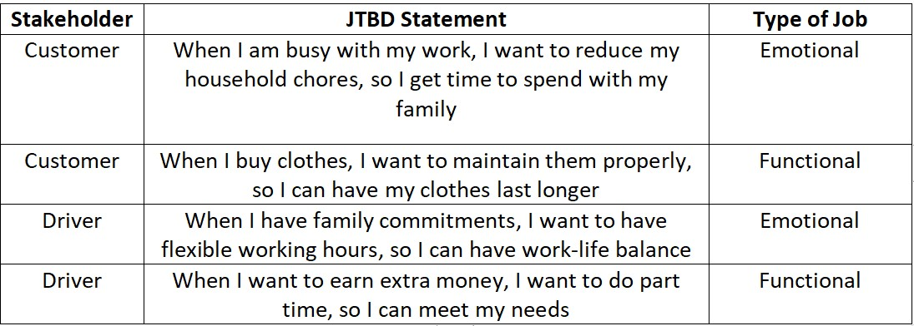
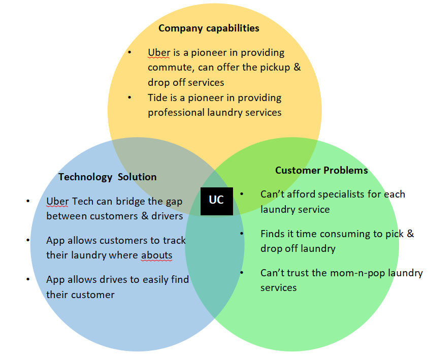
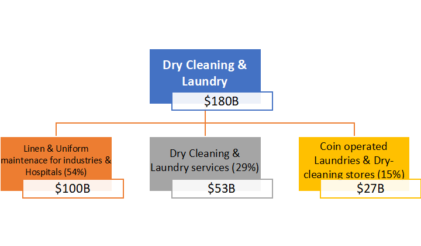
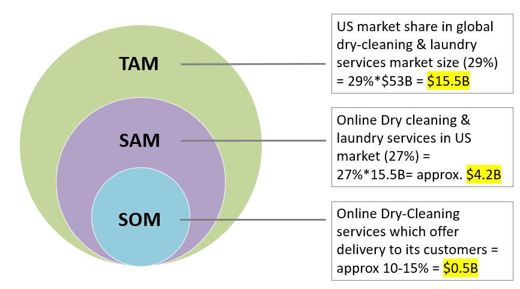
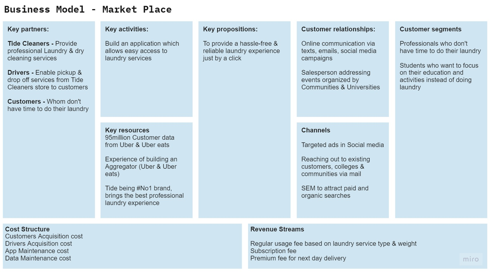
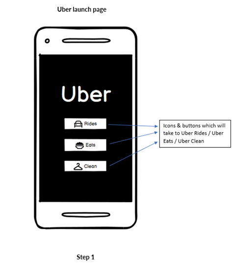
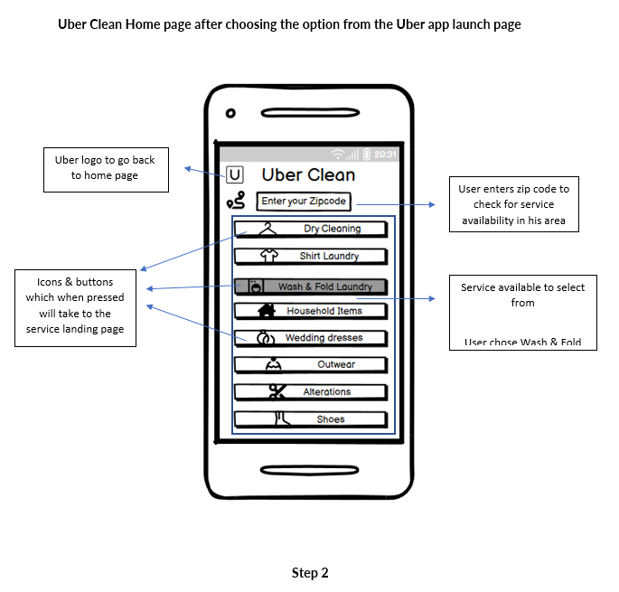
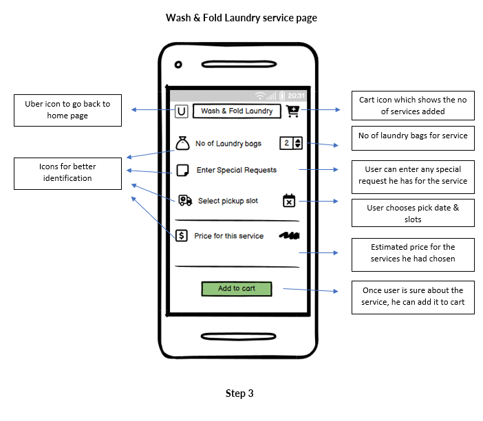
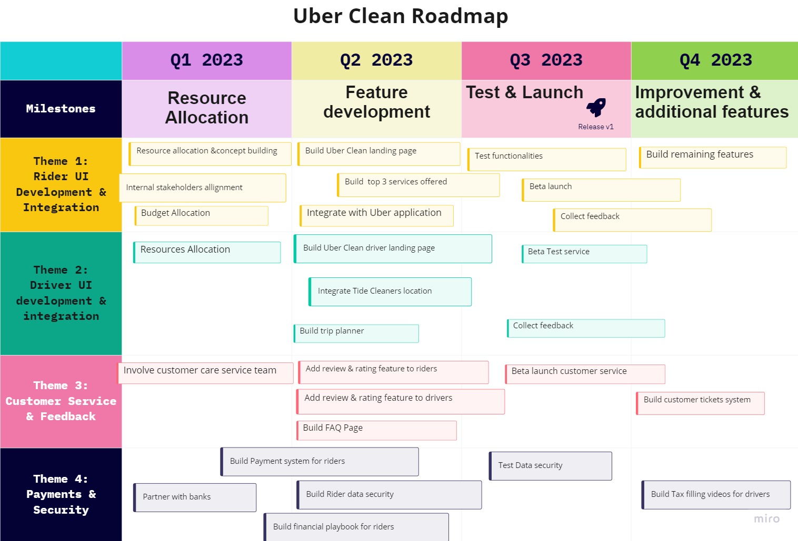

Uber is planning to enter the laundry business with a service that combines Uber’s ride-sharing network with laundry and dry-cleaning services of Tide Cleaners. The new service, Uber Clean, will involve pickup, cleaning, and delivery of laundry from consumers’ homes. Just as Uber partnered with restaurants to create UberEats, it will partner with the consumer product giant Proctor & Gamble (P&G) to create an on-demand laundry service.
As an associate product manager for the Uber Clean Capstone project, I’m responsible to create a complete product development plan for Uber Clean. Responsibilities include:
Jobs-to-be-done approach helped me to identify the customer problem which I’m trying to solve by focusing on the outcomes customer want to achieve, rather than the product. I identified 4 high value product opportunities based on the type of job customers want to achieve.
After analyzing the JTBD statements given by customers, I have identified the outcome expectations of customers and the product opportunity which can be solved by Uber
 Identified 3 important target personas for the Uber Clean service
Working professionals who are occupied with work and don’t have time for their family
Students who are busy with academics and social activities and who doesn’t have expertise or time to do his laundry
Someone who loves driving and is looking for a part-time employment
“Uber Clean is an aggregator which connects the professional laundry services (Tide), individual customers, and drivers who will do the drop & pickup of laundry”
The purpose of the product is to provide professional laundry services at a reasonable price to save time and efforts of individuals, just by a click on their mobile app. At the same time, it also gives employment opportunity to people in need who are willing to work independently as per their convenience.
I prefer to do a single featured MVP to test the product’s market fit in 2-3 different cities. Firstly, I would consider building a basic version of the Uber Clean app which is linked with Uber. A small icon of laundry would show on the uber app, which when clicked will re-direct to Uber clean app. The Uber clean app would have the basic features as in the type of services the customer wants to choose the estimated fare for the same and a feedback
By going ahead with the single featured MVP, I will get to understand if
The above can be measured by Quantitative Analysis (the click through rates & conversions, customer demographics from Uber data base) and Qualitative Analysis (Feedback)
To test the product-market fit, I would prefer to do a single feature MVP. I would build a basic version of the Uber Clean services landing page which is linked with Uber app.The Uber clean landing page would have the basic features, as in, the type of services the customer wants to choose, the estimated fare for the same, and a feedback
By going ahead with the single featured MVP, I will get to understand if
I considered top-to-bottom approach to calculate the TAM, SAM & SOM for Uber Clean business. As I wanted to launch Uber clean in the USA, I calculated the market share of the USA geography only.
  Created wireframes using Balsmiq to show the flow of the app
Uber Home page which shows all the 3 services available which is Uber Rides, Uber Eats & Uber Clean. After customer selects the service, he is directed to the landing page it
After landing up on the Uber Clean home page, customer should enter his zip code to check for service availability. The services pop-up only after the zip code is available for service. Then customer choose one among the several options available, i.e wash & fold laundry
Once customer lands on the Wash & Fold laundry page, they have to choose the no of laundry bags they want to give, mention any special requests, Select his convenient pickup slot, then the price estimation of the service get calculated. Customer adds his service to cart and pays for the service
Created a product roadmap to have a track on the timelines of the product feature release as per priority. As the product is in the initial stage, I choose themes and classified all the feature requests which are of similar category to see trends. Identified the high priority categories that have major feature requests and finalized them.
For professionals who are busy with their day-to-day activities, who don’t have time to do their laundry chores, the Uber Clean is a laundry service app (partnered with Tide cleaners) that helps you do your laundry hassle free. Unlike the local laundry & dry-cleaning stores, we offer a wide range of professional & customized services with door pickup & delivery
“Save time by scheduling a pickup of your unwashed laundry”
“Uber Clean is a 1-stop-destination for all your laundry mishaps”
“Experience the best professional services in Laundry cleaning at an affordable price”
I followed the question sales pitch as it covers all the customer problems. The questions asked were mostly customer painpoints. After that I stated statistics to tell them that Uber Clean empathizes with them. This tells the customers that we really know what they want, and this gains their trust.
“Do you want to spend your weekends with your family instead of doing the boring laundry? Do you freak out seeing the pile of clothes lying in your bin? Don’t your clothes last long? Is the local laundry service too far from your place to drop off/pick up? Do you find it difficult to get rid of the tough stains even after multiple washes? “
“You are not the only one who felt the above. About 68% of US residents dread doing their laundry, though it is a necessary task. Uber in partnership with professional Tide Cleaners have launched Uber Clean which helps you get your laundry done just by a click on the app at an affordable price. Let us handle all your laundry services, pick up & drop off your laundry bags at your doorsteps while you enjoy your day relaxing. We also offer customized services based on your needs.”
As Uber Clean is newly launched and the on-demand laundry industry isn’t very saturated in North America Increasing the share of Wallet to grow Uber Clean from existing Uber customers would be a right approach
Uber & Uber Eats has millions of customer base in the North America and gets $10B in revenue from this geography. Uber can cross sell Uber Clean services to this customer base. By doing this it is easy to reach customers, with minimal costs ( minimal CAC ) and as Uber customers have used Uber services, they trust Uber brand and Customer conversion is easier for Uber Clean services.
To launch the product, I have chosen the following Customer Segment:
The Key Metrics used at each stage of Customer Funnel of Uber Clean looks as below: